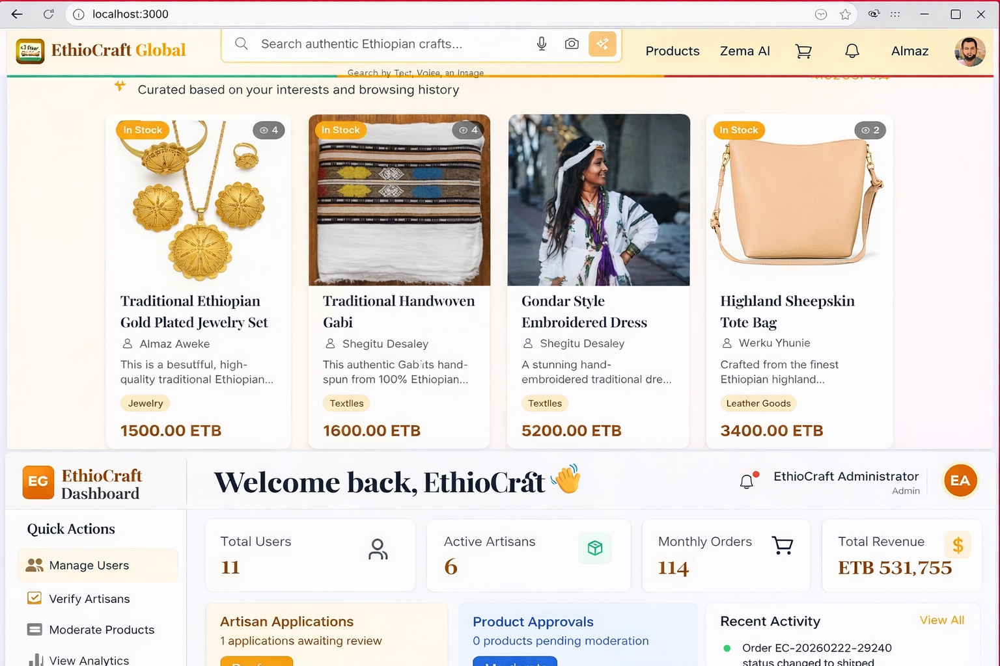
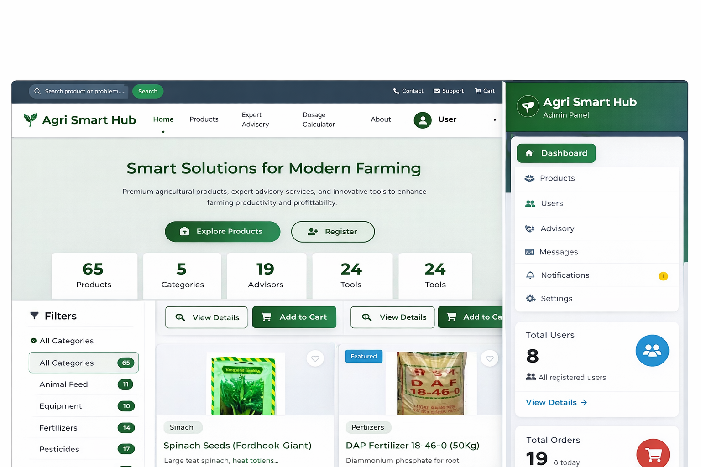
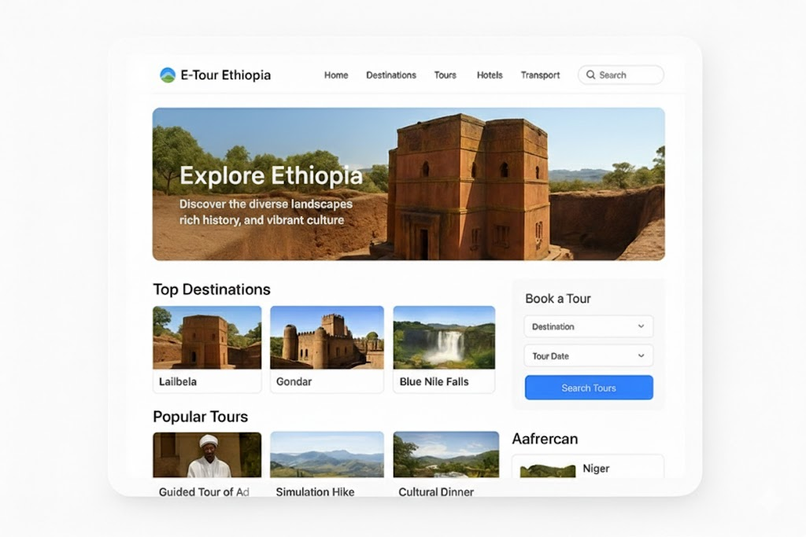
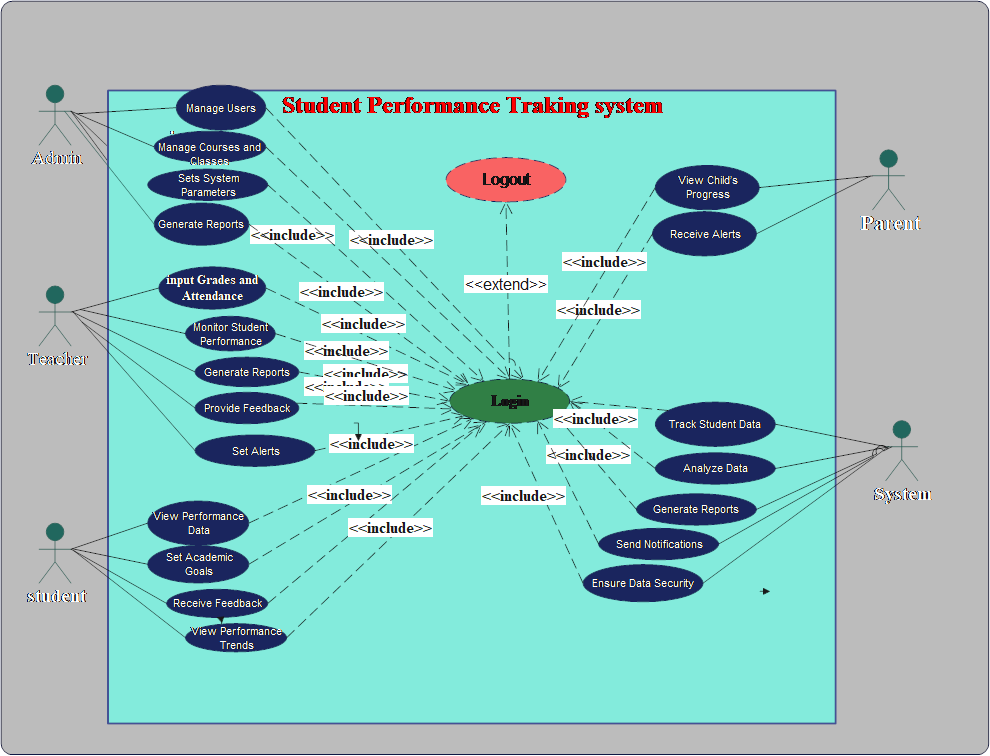

AI‑powered platforms, full‑stack systems, and academic work
As an Information Systems student at the University of Gondar, I've built AI‑enhanced web/mobile platforms and designed system architectures. Below are the key projects from my portfolio, directly reflecting my resume.

AI‑Enhanced E‑Commerce Platform – A web‑based marketplace with intelligent product recommendations, digital storefronts, and order management features.

AI‑Powered Agricultural Advisory System – A mobile platform providing crop suitability analysis, input recommendations, and weather‑based advisory support for Ethiopian farmers.

Unified digital tourism & hotel booking platform – Integrates 360° virtual tours, AI‑powered travel recommendations, and secure online payments. Top winner of the 2025 Student Startup Competition.

Comprehensive system design project – Designed system architecture, database schema, and conducted requirement analysis using structured and object‑oriented methodologies (UML).
Identify real‑world pain points (tourism, agriculture, e‑commerce) and define AI use cases.
Collect/annotate data, design scalable schemas, and plan ML pipelines.
Build MVP with full‑stack (web/Android), integrate AI models, then refine.
Deploy, gather feedback, and present in competitions (like Startup 2025).
Recommendation systems, crop suitability models, basic NLP for travel.
Django, Flask, React, Android (Kotlin), REST APIs, database design.
Requirements, architecture diagrams, use case modeling, SRS documents.
Git, GitHub, Firebase, basic Docker, cloud deployment (render/heroku).
Building on my AI & full‑stack foundation
Voice‑based advisory in Amharic using fine‑tuned LLMs + real‑time weather.
Augmented reality overlay for historical sites, integrated with E‑Tour.
Alternative credit scoring using mobile transaction data for Ethiopian farmers.
I'm open to collaborate on AI, full‑stack, or impact‑driven ideas.